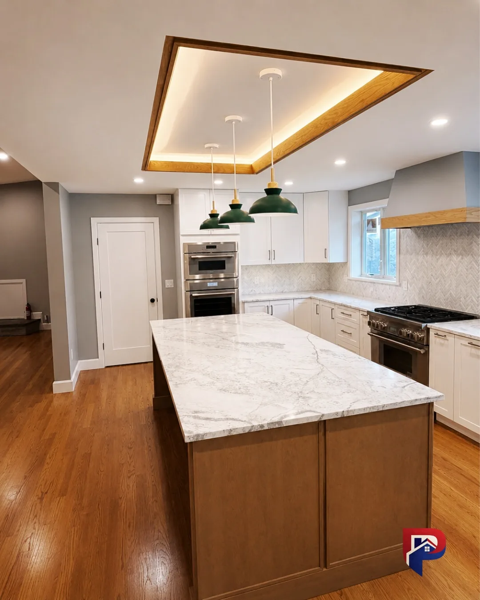

Kitchen Remodeling Peabody MA Homeowners Trust
Kitchen remodeling in Peabody MA, done right from tear-out to final tile by one licensed, insured general contractor crew. Premium Pro Contractors handles the whole kitchen renovation across Peabody and the North Shore: demolition, layout, cabinetry, countertops, tile, plumbing, electrical and finish carpentry. One contractor, one written estimate, no hidden costs and no surprise extras.


One Team. Full Kitchen. Done Right.
Your kitchen is the heart of your home, and kitchen remodeling in Peabody MA is our flagship service. We rebuild it with the same care we would put into our own, handling demolition, layout planning, cabinetry, countertops, tile, plumbing, electrical, and finish carpentry from start to finish. You deal with one team. You get a written estimate before we start. And we do not disappear when the job ends. As a full general contractor, we carry the whole project on one schedule, so the licensed plumbing and electrical work lands cleanly alongside the cabinets and counters instead of falling through the cracks between separate trades.
What's Included
- Demolition and disposal
- Layout planning and design coordination
- Cabinetry installation or refinishing
- Countertops (granite, quartz, butcher block)
- Tile, backsplash, and flooring
- Plumbing and electrical (with licensed subs)
- Lighting and fixtures
- Final paint and finish carpentry
- All permits handled
- Final walk-through and 1-year follow-up
Most kitchen remodels in our area range from $25,000 to $35,000, depending on layout, finishes, and structural changes. We give you a clear, itemized estimate before any work begins, and we stick to it.
Timeline: 4 to 8 weeks, depending on scope.
Why Peabody Kitchens Need One Accountable Contractor
A kitchen remodel is rarely just the kitchen. Open a wall and you often find dated wiring that cannot safely carry today's load, a supply line that should have been replaced years ago, a floor that has settled, or a header that was never sized for the opening you want. When a homeowner tries to run that through a cabinet showroom, a separate plumber and a handyman, the surprises fall through the cracks between them and become change orders. As a general contractor serving Peabody and the North Shore, we own the whole outcome, so nothing gets lost between trades and one crew is responsible for your home from start to finish.
One Schedule, One Crew
Cabinets, counters, carpentry, plumbing and electrical all land on the same timeline under one accountable crew, not a stack of separate bills and no-shows.
Written, Itemized Pricing
You get a clear, line-by-line estimate before any work begins, and we hold to it. No vague allowances that balloon once the walls are open.
Refresh or Full Remodel
If the boxes are solid we can refresh with cabinet painting. If the layout is wrong, we design a full remodel. One honest recommendation, not the biggest ticket.
Permits and Inspections
We pull the City of Peabody permits, coordinate licensed trades and schedule inspections, so the work is signed off to code.
Licensed & Insured
Family-run, licensed and insured in Massachusetts. Proof of license and insurance is provided before we start.
Room to Grow
Kitchens often anchor a bigger plan. We can tie the remodel into a home addition when you need more space.
What a Kitchen Remodeling Project in Peabody Includes
A complete kitchen remodel touches almost every trade in the house, which is exactly why one accountable general contractor makes the difference between a smooth project and a stressful one. When we take on kitchen remodeling in Peabody MA, our scope typically covers demolition and debris disposal, layout and design coordination, cabinetry, countertops, backsplash and flooring, licensed plumbing and electrical, lighting, appliances and fixtures, finish carpentry, trim and final paint, plus all permits and inspections. Nothing is left as someone else's problem, and you always know who to call.
Because we handle the whole job, we can sequence the work intelligently. Cabinets and long-lead materials are ordered before we open a single wall, which shortens the stretch your kitchen is actually out of service. The rough plumbing and electrical happen while the walls are open and get inspected before anything closes up. Then finishes go in the right order, so the counters are templated to cabinets that are actually installed and the backsplash meets a counter that is really there. That coordination is quiet, but it is the whole reason a remodel finishes clean and on time.
Refresh vs Mid-Range vs Full Gut: Which Remodel You Actually Need
Not every kitchen needs to be torn to the studs, and one of the most valuable things we do at the estimate is tell you honestly which level of remodel gets you the result you want. A cosmetic refresh keeps the existing layout and updates the surfaces you see and touch: painting or refacing cabinets, new countertops, a fresh backsplash, updated lighting and hardware. When the boxes are solid and the flow already works, a refresh delivers most of the visual impact for a fraction of a full remodel.
A mid-range remodel replaces the cabinets and counters but keeps the same footprint, which suits homeowners who want a genuinely new kitchen without the cost of moving plumbing, gas and walls. A full remodel with a layout change is the right call when the kitchen fights how you cook: when walls need to come down, the sink or range needs to move, or the room needs to open to a dining or living space. And a high-end or gut remodel adds custom cabinetry, premium finishes and structural work when you want the kitchen to be a showpiece. We show you the honest trade-offs so your money lands where it matters.
Cabinets: Custom, Semi-Custom, Refacing and Painting
Cabinets are the biggest line item and the biggest visual decision in any kitchen, so we walk you through the options rather than defaulting to the most expensive one. Full custom cabinetry is the choice when the layout is unusual, the ceilings are tall, or you want a specific species, finish and detail that stock lines cannot deliver. Semi-custom cabinetry hits a sweet spot for many Peabody kitchens, offering a wide range of sizes, finishes and organizational inserts at a more predictable price and lead time.
Where the existing boxes are solid, which is common in older North Shore homes that were built better than a lot of today's stock cabinets, refacing or a sprayed cabinet painting refresh gives you a nearly new look for a fraction of the cost of replacement. Whichever path fits your kitchen, the finish is sprayed and durable rather than brushed on in place, the hardware is soft-close, and the interior storage is designed around how you actually use the room instead of a generic template.
Countertops: Quartz, Granite and Butcher Block
Countertops set the tone of the kitchen and take a daily beating, so the right material is a balance of looks, maintenance and how you cook. Quartz is the most popular choice we install because it is engineered, non-porous, extremely durable and needs no sealing, which makes it ideal for a busy family kitchen. Natural granite offers one-of-a-kind stone character and stands up to heat well, with periodic sealing to keep it looking its best. A butcher-block section, often on an island or a baking zone, adds warmth and a working surface that can be sanded and re-oiled over the years.
We template the counters to the cabinets after they are installed, coordinate the sink, faucet and any pot filler so everything agrees, and handle the fabrication and install so seams land where they should. If you want the counter material to run up the wall as a full-height slab backsplash for a clean, high-end look, we plan that early so the fabrication and layout line up.
Islands, Layout and the Work Triangle
A great kitchen is about flow before it is about finishes. We design around the classic work triangle between the sink, the range and the refrigerator so the three spots you move between constantly are efficient and uncrowded, then layer in prep zones, landing space beside the range and the fridge, and storage where you actually reach for it. Getting the layout right is what makes a kitchen feel effortless rather than cramped, no matter how beautiful the materials are.
An island is at the top of most wish lists, and whether one fits well is a question of clearances, not just desire. In larger homes an island can anchor the room, add prep space, house a second sink or a beverage fridge, and create the casual seating where families spend their mornings. In tighter kitchens, a peninsula or a slim prep island with a single overhang for stools often delivers the same function without choking the walkways. We size and place any island around real clearances so you can open the dishwasher, oven and fridge without a traffic jam, and we run any plumbing, electrical or gas to it before the floor closes up.
Open-Concept Kitchens and Removing Walls
Many North Shore kitchens feel closed off because a wall separates the kitchen from a dining or living space, and opening that up is one of the most transformative moves in a remodel. If the wall is non-load-bearing we can remove it cleanly and reroute any wiring or ductwork inside it. If it is load-bearing, we design and install a properly sized beam or header so the ceiling stays fully supported, then finish it so the transition looks intentional rather than patched.
Because we are a full general contractor, the framing, structural work, electrical rerouting, drywall and finish all happen under one crew rather than across a chain of subcontractors. That is what keeps an open-concept project on schedule and lets us tie the new sightlines, flooring transitions and paint together into one clean result. When the goal is more space than the existing footprint can give, we can carry the kitchen into a home addition that adds a proper eat-in area or mudroom, all planned as one project.
Backsplashes, Flooring and Finishes
The finishing surfaces do a lot of the work of making a kitchen feel both current and durable. Backsplashes protect the wall behind the range and sink while carrying much of the style: classic subway tile, handmade zellige with gentle variation, honed marble, or a full-height slab that continues the counter material up the wall. Each reads well in North Shore light and each is chosen to suit the cabinets and counters rather than as an afterthought.
Flooring is where the kitchen meets the rest of the house. In many Peabody homes we refinish or extend the original hardwood so the kitchen flows into adjoining rooms, and where a subfloor has settled we level it first so tile and cabinetry sit true. For households that want more resilience, engineered hardwood, luxury vinyl plank or porcelain tile with the look of stone all hold up beautifully. We tie the flooring, cabinet color, counters and backsplash into one palette, often coordinating the wall color with our interior painting crew, so the finished kitchen feels designed rather than assembled from separate decisions.
Lighting, Plumbing and Electrical Coordination
Lighting is one of the biggest upgrades in a kitchen and one of the most overlooked. A good remodel layers the light: recessed cans or a well-placed ceiling fixture for general light, undercabinet lighting so you can actually see the counters, pendants over an island or peninsula, and dimmers to set the mood. Older North Shore homes were frequently wired for a single ceiling fixture and a couple of outlets, nowhere near what a modern kitchen needs, so getting the electrical planned early is essential.
Because we coordinate the licensed plumber and electrician on our own schedule, the panel upgrades, dedicated appliance circuits, added outlets and USB points, relocated supply and drain lines, and gas connections all happen at the right stage, before cabinets and drywall close up the walls. Everything is inspected and to code. That planning up front is what lets us deliver the lighting and functionality you want without tearing anything back open later.
Appliances, Fixtures and Storage
A kitchen only works when the cabinetry, counters, plumbing and electrical are built around the appliances you actually chose, so we lock selections early. Rough openings, gas or electrical supply, venting and water lines all get placed before cabinets go in. Fitting a professional-style range, a counter-depth or built-in refrigerator, a wall oven, a microwave drawer or a paneled dishwasher is a coordination problem, and we solve it up front rather than discovering it mid-install.
On fixtures, we install the faucets, pot fillers, disposals, filtered-water systems and deep single-bowl sinks that suit how you cook, and we make sure the sink, counter and plumbing all agree. Storage is designed around real life: deep drawers for pots, pull-outs for trash and recycling, a pantry cabinet or tall storage, drawer dividers and corner solutions that reclaim the awkward cabinet everyone hates. The goal is a kitchen where everything has a place within easy reach.
Permits, Inspections and Licensed Trades in Massachusetts
A kitchen remodel that touches plumbing, electrical, gas or structure needs permits from the City of Peabody, and in Massachusetts the plumbing and electrical work must be performed by licensed trades and inspected. That is not red tape to fear, it is the paper trail that protects you and your home's value at resale. As your licensed general contractor we handle the permit applications, schedule the inspections and make sure every stage is signed off, so you are never chasing the city yourself.
Hiring a licensed, insured contractor also matters if anything ever goes wrong. In Massachusetts, work done by a registered Home Improvement Contractor carries consumer protections that off-the-books labor does not, and we provide proof of license and insurance before we begin. It is a quiet part of doing the job right, and it is exactly the kind of thing homeowners appreciate only when they compare us against a cheaper bid that skips it.
Older-Home Considerations Across the North Shore
Much of the North Shore has an older housing stock, and that character is exactly why people love living here and exactly what can make a kitchen remodel more involved than in a newer subdivision. A kitchen in a home built decades or a century ago was designed for a different way of cooking, not for an open plan with an island, a dishwasher, a range hood and enough outlets to run a modern kitchen. Bridging that gap without gutting the character of the house is the craft of remodeling here.
The most common things we find behind older walls are wiring that cannot safely carry today's load, galvanized supply lines due for replacement, floors that have settled unevenly, and plaster that crumbles the moment it is opened. A contractor who has not worked in these homes treats each as an emergency and a change order. We treat them as expected, budget realistically for them up front, and bring in the licensed trades on our schedule so they are handled cleanly rather than in a panic mid-project.
Kitchen Remodeling Cost Ranges in Peabody and the North Shore
Kitchen cost depends far more on scope and the age of the house than on the town line. Here is how we advise homeowners, with typical ranges so you can plan before your free estimate. Older homes tend to land at the higher end of each band because of what hides behind the walls, and premium materials and custom cabinetry move any project up.
| Scope | Best when | Typical North Shore range |
|---|---|---|
| Cosmetic refresh | Layout works, boxes are solid | $18,000 to $30,000 |
| Mid-range remodel | New cabinets and counters, same footprint | $35,000 to $55,000 |
| Full remodel with layout change | Walls moved, plumbing and electrical relocated | $55,000 to $75,000 |
| High-end or full gut | Custom cabinetry, structural work, premium finishes | $75,000+ |
Your written estimate is free and itemized, so the scope and price are clear before we begin. If a refresh will get you most of the result for a fraction of the cost, we will tell you, and if the smarter money is a full remodel that finally fixes the layout, we will show you that path with real numbers too.
Timeline: What to Expect Week by Week
Knowing how the project will unfold takes the stress out of living through a remodel. After selections are made and cabinets are ordered, a typical Peabody kitchen runs about four to eight weeks on site. The first stretch is demolition and any structural or layout work. Next comes the rough plumbing and electrical while the walls are open, followed by inspections. From there we insulate and close up the walls, prep and paint, then set cabinets, template and install counters, tile the backsplash, and finish with fixtures, appliances, lighting and the final details.
In an older home the schedule leaves room for the surprises we know are likely, a settled floor to level, dated wiring to replace, plaster that needs rebuilding, so a discovery does not blow up the timeline. We keep you updated at each stage, and because one crew runs the whole job there are no gaps waiting on a subcontractor who is busy on someone else's project. That continuity is why our kitchens finish close to the date we promise.
Keeping Your Home Livable and Budgeting the Remodel
A kitchen remodel happens in the middle of a home you are still living in, so protecting the rest of the house is not optional. We use dust control and containment so demo debris stays out of the rest of the home, floor and stair protection along the whole work path, and a clean, swept site at the end of each day rather than a construction zone you have to navigate around. When it helps, we set up a temporary kitchen area so you are not eating out for weeks, and we plan the sequence to shrink the window your kitchen is actually out of use.
On budgeting, the honest advice is to build in a contingency, especially in an older home, and to spend where it shows and lasts. Cabinets, counters and a smart layout return the most, while some finishes can be phased or chosen at a lower tier without hurting the result. We help you allocate the budget so the kitchen feels complete rather than compromised, and our itemized estimate makes it easy to see exactly where the money goes. There are no vague allowances that quietly balloon once the walls are open.
Towns We Serve for Kitchen Remodeling From Peabody
We are based at 9 Centennial Drive in Peabody, which puts us at the center of the North Shore and a short drive from most of the towns we serve. Being local means we show up on time, know the regional housing stock, and treat every job as another neighbor who might refer us to the next street over. That referral-built reputation is why most of our kitchen work comes from word of mouth rather than advertising.
Alongside Peabody we regularly remodel kitchens in Salem, Beverly, Marblehead, Swampscott, Danvers, Lynnfield, Saugus, Lynn, Revere, Wakefield and Stoneham. If you are in a nearby town, we have a dedicated kitchen remodeling in Marblehead page and a kitchen remodeling in Lynnfield page, and you can see every community we cover on our service areas page. Wherever you are, the process is the same: a free written estimate, one accountable crew, permits and inspections handled, and a kitchen built to last.
Why Homeowners Choose Premium Pro Contractors
There is no shortage of people who will remodel a kitchen. What is harder to find is a licensed general contractor who tells you the truth about what the house needs versus what will oversell you, and who stands behind the work. We are family-run, licensed and insured in Massachusetts, and we have grown almost entirely on referrals because we do not cut the corners a homeowner cannot see.
When you hire us for your Peabody kitchen remodel you get a written, itemized scope up front, a realistic schedule, permits and inspections handled, a clean and protected job site, and finish work backed by real carpentry and licensed trades underneath it. You get one point of contact instead of a chain of subcontractors, and honest guidance whether your project turns out to be a tight refresh or a full remodel with an addition. If your project also includes a bathroom remodel, we can carry that under the same crew. Send us your project details and we will confirm scope, timing and next steps, then provide a free written estimate.
Peabody Kitchen Remodeling FAQ
How much does kitchen remodeling in Peabody MA cost?
Most Peabody and North Shore MA kitchen remodels run $30,000 to $75,000, with high-end custom kitchens going higher. A cosmetic refresh that keeps the existing layout, painting or refacing cabinets, swapping counters and updating lighting, typically lands in the $18,000 to $30,000 range. A mid-range remodel with new cabinets and counters on the same footprint runs $35,000 to $55,000, and a full remodel that moves walls, plumbing and electrical runs $55,000 to $75,000 and up. Older North Shore homes can carry a little extra for leveling floors, updating dated wiring and repairing plaster. Your written, itemized estimate is free, so you see the real number before any work begins.
How long does a kitchen remodel take in Peabody?
A typical Peabody kitchen remodel takes about 4 to 8 weeks on site once materials are ordered, plus a few weeks up front for design, selections and cabinet lead time. A cosmetic refresh can be done in 2 to 3 weeks, while a full gut with a new layout in an older home can run 9 weeks or more. Because one accountable Premium Pro crew runs the whole job, there are no long gaps waiting on a subcontractor, so we finish close to the date we promise.
Do I need a permit to remodel a kitchen in Peabody, MA?
Yes. Most kitchen remodels in Peabody that touch plumbing, electrical, gas or structure require permits from the City of Peabody building department, and the plumbing and electrical work must be performed by licensed trades and inspected. As your licensed general contractor we pull the permits, coordinate the licensed plumber and electrician, and schedule every inspection, so the job is done to code and signed off properly. That paper trail also protects your home's value at resale.
Can you open up a kitchen by removing a wall?
Often, yes. Many North Shore kitchens feel closed off because a wall separates the kitchen from a dining or living space. If that wall is non-load-bearing we can usually remove it cleanly, and if it is load-bearing we design and install a properly sized beam or header so the ceiling stays supported. Because we are a full general contractor, the framing, structural work, electrical rerouting and finish all happen under one crew rather than across separate trades.
Should I replace my cabinets or just paint them?
It depends on the boxes and the layout. If your existing cabinet boxes are solid, which is common in older North Shore homes, painting or refacing gives you a nearly new look for a fraction of the cost of replacement, and we spray the finish for a smooth, durable result rather than brushing it on in place. If the layout is fighting you or the boxes are failing, new custom or semi-custom cabinetry built to a smarter plan is money well spent. We give you one honest recommendation instead of automatically selling the bigger job.
What does a full kitchen remodel include?
A full remodel with Premium Pro covers demolition and disposal, layout and design coordination, cabinetry, countertops, backsplash and flooring, licensed plumbing and electrical, lighting, appliances and fixtures, finish carpentry, trim and final paint, plus all permits and inspections. You get one written estimate, one accountable crew from tear-out to final tile, a clean and protected job site, and a final walkthrough with a follow-up at the one-year mark.
Which towns do you serve for kitchen remodeling from Peabody?
We are based in Peabody, MA and remodel kitchens across the North Shore, including Salem, Beverly, Marblehead, Swampscott, Danvers, Lynnfield, Saugus, Lynn, Revere, Wakefield and Stoneham. Being local means we know the regional housing stock, show up on time, and stay reachable through the whole project. You can see every town we cover on our service areas page.
How a Kitchen Remodel Works with Us
Free On-Site Estimate
We walk through your kitchen, listen to your goals, and give you a written, itemized estimate, with no vague numbers.
Design & Material Selection
We coordinate layout, cabinetry, countertops, tile, and finishes. You make the calls; we guide the process.
Demo & Build
Our crew handles tear-out, framing, rough-in trades, and all finish work, on your schedule, with daily cleanup.
Walk-Through & Follow-Up
We do a final walk-through together. If anything needs attention, we fix it. Then we check in at the one-year mark.
Reviews from the North Shore
"Our kitchen is completely transformed. Claudiney's team was professional, clean, and finished exactly on the timeline they promised. I'd hire them again without hesitation."
"The estimate was detailed and they actually stuck to it. No surprises on the bill. The work was excellent: cabinets, countertops, backsplash, all of it."
"Dealing with one contractor for the whole kitchen made everything so much easier. They handled the plumber and electrician too. Great result."
Ready to Start Your Project?
Free estimate. No pressure. Most homeowners hear back from us within 24 hours.